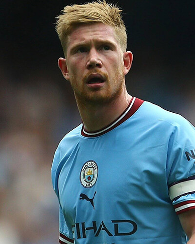

Lionel Messi
Lionel Andrés Messi Cuccittini, conocido como Leo Messi, es un futbolista argentino que juega como delantero o centrocampista. Jugador histórico del Fútbol Club Barcelona, al que estuvo ligado veinte años, desde 2021 integra el plantel del Paris Saint-Germain de la Ligue 1 de Francia.
- Nacido 24 de junio de 1987 (edad 35 años), rosario argentina
- Estatura: 1,69 m
- Equipos actuales: París Saint-Germain Football Club (#30 / Delantero), Selección de fútbol de Argentina (#10 / Delantero)
- Sobrenombre: La Pulga
- Peso: 67 kg

Cristiano Ronaldo
Cristiano Ronaldo dos Santos Aveiro, conocido como Cristiano Ronaldo, es un futbolista portugués que juega como delantero o extremo. Jugador histórico, estuvo ligado a diversos equipos importantes antes de integrar desde 2021 el plantel del Manchester United Football Club de la Premier League de Inglaterra
- Nacido: 5 de febrero de 1985 (edad 37 años), Funchal, Portugal
- Estatura: 1,87 m
- Equipo actual: Selección de fútbol de Portugal (#7 / Delantero)
- Sobrenombre: el bicho
- Peso: 85 kg

Robert Lewandowski
Robert Lewandowski es un futbolista polaco que juega como delantero en el F. C. Barcelona de la Primera División de España. Es también internacional absoluto con la selección de Polonia desde 2008, de la cual es su capitán y máximo goleador histórico.
- Nacido: 21 de agosto de 1988 (edad 34 años), Varsovia, Polonia
- Estatura: 1,85 m
- Equipos actuales: Fútbol Club Barcelona (#9 / Delantero), Selección de fútbol de Polonia (#9 / Delantero)
- Sobrenombre: Sportacus
- Peso: 81 kg

Kevin De Bruyne
Kevin De Bruyne es un futbolista belga que juega como centrocampista en el Manchester City F. C. de la Premier League de Inglaterra, donde es el primer capitán. Es internacional con la selección de Bélgica.
- Nacido: 28 de junio de 1991 (edad 31 años), Drongen, Gante, Bélgica
- Estatura: 1,81 m
- Equipos actuales: Manchester City Football Club (#17 / Centrocampista)
- Sobrenombre: The Prince
- Peso: 70 kg